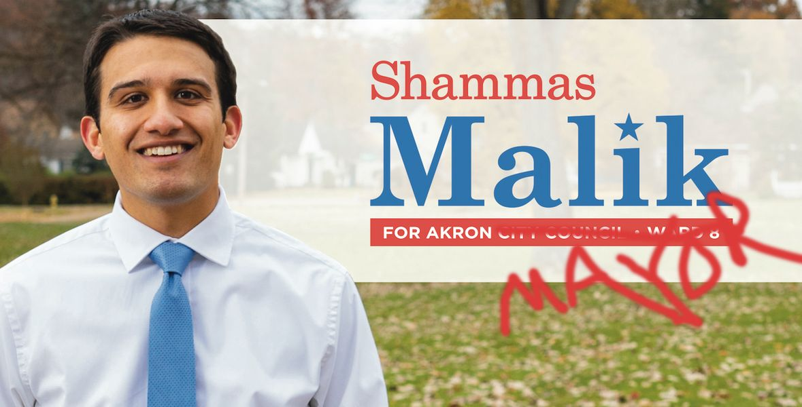

Timeline photos
The rumor is that Shammas Malik is going to announce his run for Akron mayor next week.
I'm going to support him. And then I'm going to run for Ward 8 City Council. That is the Ward he currently holds.
Shammas Malik will win because he is a money magnet. He raised about $50,000 for a Ward seat where most people raise next to nothing. He's brown. He's Harvard educated. He will easily raise the $200,000-$500,000 he will need to win this race. (The only thing he's politically missing is that he's not a woman. Otherwise, he's perfect.)
No one will be able to beat Shammas. He's too driven and too politically perfect. Harvard Law Students are some of the most competitive, aggressive people you will ever meet. (They often don't present that way. They usually like to make it look like they are soft and kind and gentle. Make no mistake. They are Wolves in Sheep's clothing.)
But Shammas is a good Wolf. He cares about the people. He will be a very positive force in Akron. I am looking forward to a Shammas Malik administration.
And then there's me.
I am everything Shammas is not. I'm a wolf in wolf's clothing. I am a terrible politician. I swear. I am angry. I rage against the machine like a pit bull. I am Truth To Power.
Shammas doesn't like me because of those things. He doesn't believe it "proper" to be so course.
He likes everyone to be civilized and polite. I know how to use an indoor toilet. That's about the extent of my civility.
Shammas berates the people because he wants "civil discourse." Shammas doesn't know the first thing of what it means to be Black or extremely poor in Akron Ohio. He will fight for those people while chastising them for being too angry. (I don't know what it's like to be poor or Black either. But I do know one thing: It's SUPER fucked up and they don't need another "leader" telling them all the things they are doing wrong.)
There is not ONE THING a Black person or poor person could do that would be unjustified for what the racist power mongers have done to them in the last 198 years in Akron Ohio. (Shammas will oversee the Bicentennial of Akron (2025) during his first and probably last Akron mayoral administration because he will be moving up the political ladder.)
I believe Akronites could be WAY more angry than they currently are. A riot is the language of the unheard. And the majority of this city's residents are nothing if not unheard.
I have 2 agendas for Shammas before he moves beyond Akron:
1. Stop belittling and berating the people. It makes you look like an elitist snob. (not only is it condescending to the people, it also is going to be an easy target for much better politicians than Akron politicians.)
2. Stiffen up that handshake. There is nothing worse than a wet noodle handshake.
I don't mind verbally punching Shammas. Because when I punch Shammas I'm always punching up. He's better than me. When I punch Dan Horrigan I always feel a little icky about it because I feel like I'm punching down. He is NOT better than me.
But Shammas doesn't like it because his skin is still pretty thin. It may always be. But he needs to toughen up. He should know from his Harvard days that Akron is a VERY small pond. And he's a big fish. Eventually, he's only going to swim with big fish. And they are sharks.
I set all of this up to say one thing: I AM NOT EVER GOING TO LIE TO YOU. You are always going to get what you get from me and that's all you are ever going to get.
The last time I checked, voters were all 18 years or older. We are all adults here. You can handle a little swearing from time to time. Grow the fuck up.
I am Truth to Power. I say things that you want to say but can't because it's too dangerous for you. I think it's the number one reason people like Donald Trump. He tells the truth (that he believes).
I am a leftist populist. I am Donald Trump for the Left. I am for the people. And the people have always been royally fucked. I am not going to keep my mouth shut because I think it might be strategically prudent.
If I believe it I'm going to say it. I think that's what's missing the most in politics todays. These politicians are slimy snakes in the grass that will say and do anything to stay in office.
Elect me. Don't elect me. I have a full life either way.
If you want someone that will fight to the death for ALL people you want me. If you want someone that lies to you so that you feel better about the world there are countless politicians out there you can choose from.
I know I am yet again irritating Shammas because he surely has some highly crafted "launch" strategy for his mayoral campaign announcement. But he'll get over it (or not. I don't really care.)
You should vote for Shammas Malick in the May 2023 Democratic mayoral primary. And I'll be on the ballot right there with him in Ward 8.